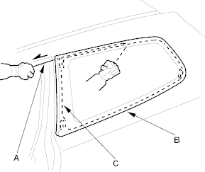
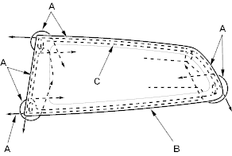

- Apply protective tape along the inside and outside edges of the body. Using an awl, make a hole through the adhesive from inside the vehicle. Push a piece of piano wire through the hole and wrap each end around a piece of wood.
- With a helper on the outside, pull the piano wire (A) back and forth in a sawing motion. Hold the piano wire as close to the quarter glass (B) as possible to prevent damage to the body and carefully cut through the adhesive (C) around the entire quarter glass.

Cutting positions:

- Carefully remove the quarter glass.
- With a putty knife, scrape the old adhesive smooth to a thickness of about 2 mm (0.08 in.) on the bonding surface around the entire quarter glass opening flange:
- Do not scrape down to the painted surface of the body; damaged paint will interfere with proper bonding.
- Remove the clips from the body.
- Clean the body bonding surface with a sponge dampened in alcohol. After cleaning, keep oil, grease and water from getting on the surface.
- If the old quarter glass is to be reinstalled, use a putty knife to scrape off all of the old adhesive and the rubber dam from the glass. Clean the inside face and the edge of the glass with alcohol where new adhesive is to be applied. Make sure the bonding surface is kept free of water, oil and grease.